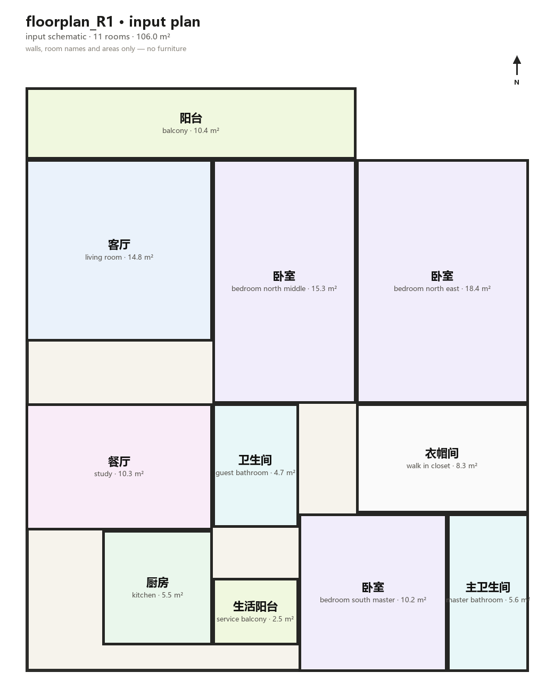
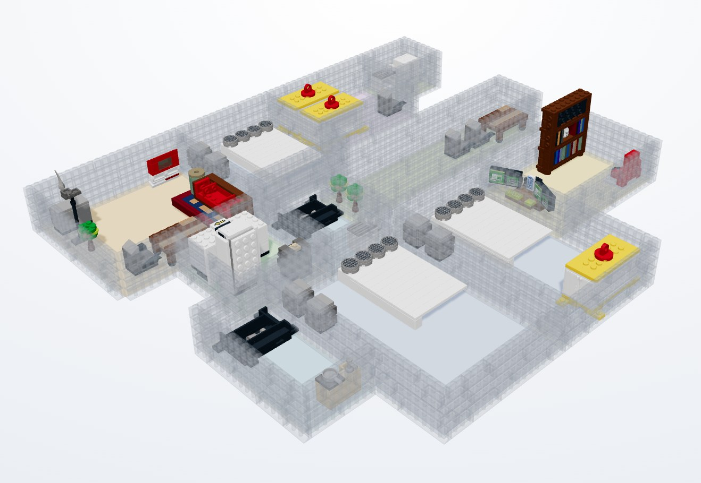
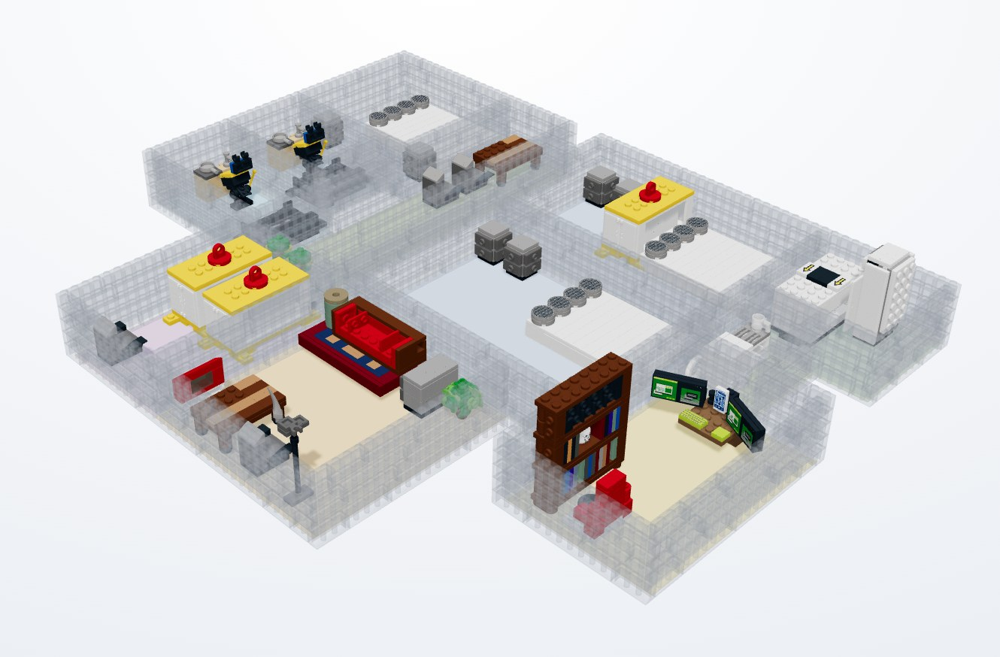
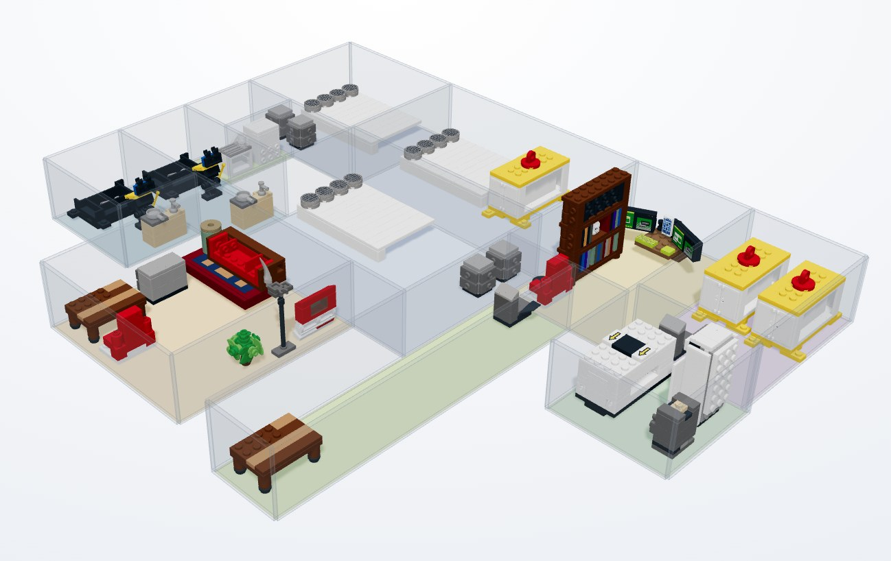
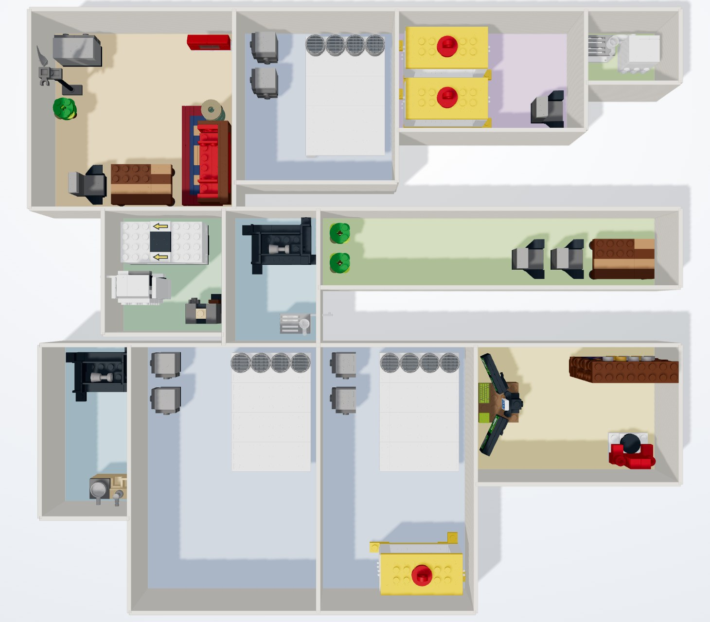
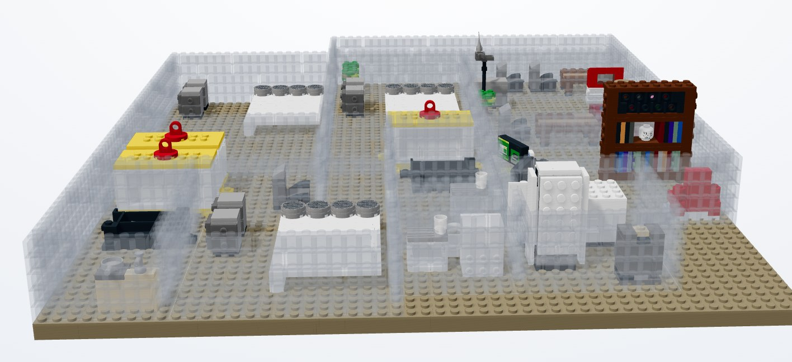

Known parts
Every piece comes from a 42-item, 16-category furniture library plus standard LDraw wall bricks. No hallucinated geometry.
Goal · Input · Output · explained
A detailed walkthrough of the three questions readers ask first: what the system is for, what it takes, and what comes back. It expands slides 2–5 of the 30 October 2026 deck with the actual R1 scene data behind the numbers.
9/9 candidate scenes green236/264 object requests placed (89.4%)7,644 parts0 cross-room overlaps
Not a picture of a room — a complete, checkable LEGO scene.
The deliverable is not a rendering of an interior. It is a complete LDraw scene: every piece selected from a known library, every object placed inside a room, every wall laid as real brick courses, and the whole assembly passed through a validation gate before it is shown.
From one plan and one brief the system returns three candidate scenes rather than one answer. A one-sentence brief under-determines the interior, so the solver exposes three plausible room layouts and wall preferences. The reader can compare them instead of accepting a single black box.
.mpd, with no token cost and no sampling variance. In this public build the image → IR step is served from a verified cache, because the available DeepSeek endpoint is text-only.
R1 · 11 rooms
A · 1,191 partsEvery piece comes from a 42-item, 16-category furniture library plus standard LDraw wall bricks. No hallucinated geometry.
Furniture is packed against wall bands and kept inside its room. Cross-room and wall–furniture overlaps are recomputed from footprints.
Each candidate ships with a per-part, per-colour BOM. R1 candidate A totals 1,191 pieces: 666 furniture parts + 525 wall bricks.
An LDraw report is classified into real errors, ε notes and sub-millimetre envelope contacts. All nine candidates pass with 0 real errors.
.mpd, per-part CSV and three rendered views.
Scope: three real floor plans, nine candidate scenes and 264 object requests — not a general floor-plan benchmark. “Validated” is computational: an LDraw checker and an independent footprint recomputation, not a physical build test.
A floor plan and one sentence — that is the whole interface.
The plan supplies room boundaries and metric dimensions. The vision model reads the drawing into a schema-checked scene IR: room names, English room types, dimensions, and a note on what was measured versus estimated. The R1 drawing yields 11 rooms, from the living room and dining room through two bathrooms and three bedrooms.
R1’s brief re-furnishes the dining room as a study: the room’s original dining set is removed and three study requests are added — desk, desk chair and bookshelf. The other 38 requests, in the remaining ten rooms, stay untouched. The brief edits one room’s program, not the whole scene.
“Use the dining room as a study.”
| Plan | Rooms | Brief | Requests |
|---|---|---|---|
| R1 | 11 | “Use the dining room as a study.” | 41 |
| R2 | 6 | “Add a desk to the living room.” | 23 |
| R3 | 7 | “Replace the coffee table with a desk in the living room.” | 24 |
Three plans × three candidates = 264 object requests in total. The brief is intentionally short: it is a program change, not a full furniture specification.
floorplan_R1_plan0.json is the IR behind candidate A. It holds 11 rooms and 35 object rows; because several rows have count > 1, those rows expand to 41 requested instances.
Room names stay bilingual (name_cn / name_en) so the brief’s room reference and the solver’s English room type can coexist. The placement field keeps the model’s intent, and confidence preserves how sure it was — both are inputs to the solver, not post-hoc explanations.
{
"source": "replanned:floorplan_R1.png#cand0",
"image_type": "floorplan",
"rooms": [
{ "name_cn": "客厅", "name_en": "living_room",
"dims_m": [3.9, 3.8] },
{ "name_cn": "餐厅", "name_en": "study",
"dims_m": [3.9, 2.65],
"room_type": "study" }
… 9 more rooms
],
"objects": [
{ "category": "sofa", "label": "三人沙发",
"count": 1, "room": "living_room",
"size_est_m": [2.3, 0.95, 0.8],
"placement": "客厅西墙，面向东侧电视墙",
"confidence": 0.8 },
… 33 more object rows, 41 instances in total
{ "category": "desk", "label": "书桌 (餐厅)",
"count": 1, "room": "餐厅",
"size_est_m": [1.2, 0.6, 0.75],
"placement": "brief: study program",
"confidence": 0.6 }
]
}Excerpt of the actual R1 candidate-A IR. … marks omitted fields and rows; strings are shown as stored.
Three scored candidates, with the files to inspect them.


Coverage is not validity. R1 candidate A places 37 of 41 requests; the four misses are capacity drops — no free wall slot left for a kitchen sink, two toilets and one wardrobe. Nothing was dropped for colliding or for using an invalid part.


| Plan | Brief | Coverage A · B · C | Parts A · B · C | Gate | ε notes A · B · C |
|---|---|---|---|---|---|
| R1 11 rooms |
“Use the dining room as a study.” | 37/41 · 38/41 · 36/41 | 1,191 · 1,187 · 1,180 | 3/3 green | 0 · 2 · 2 |
| R2 6 rooms |
“Add a desk to the living room.” | 22/23 · 20/23 · 20/23 | 708 · 694 · 683 | 3/3 green | 0 · 1 · 1 |
| R3 7 rooms |
“Replace the coffee table with a desk in the living room.” | 21/24 · 21/24 · 21/24 | 672 · 669 · 660 | 3/3 green | 1 · 1 · 1 |
Swipe horizontally to see the full table →
Parts counts include walls (five courses, 1.2 m). Across the suite: 236/264 requests, 7,644 parts, 0 cross-room overlaps and 0 real validation errors.
“Green” is a specific claim. The gate reads the raw LDraw report and classifies each diagnostic, instead of reducing the result to one exit code.
1e-3 LDU floating-point notes, recorded per scene, not ignored.The raw LDraw report is preserved, including its diagnostics, and the evaluation record keeps the raw exit code alongside the classification. This is computational validation, not a physical build test.